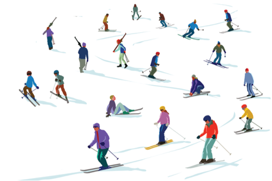

Skiing in Andorra
In the list of the best ski resorts in Andorra, the ski resort Grandvalira – Pas de la Casa/Grau Roig/Soldeu/El Tarter/Canillo/Encamp is top with 4.4 out of 5 stars. The largest ski resorts offer up to 210 kilometres of slopes (Grandvalira – Pas de la Casa/Grau Roig/Soldeu/El Tarter/Canillo/Encamp). The highest ski resorts for skiing in Andorra extend up to an altitude of 2,640 metres (Grandvalira – Pas de la Casa/Grau Roig/Soldeu/El Tarter/Canillo/Encamp). And our tip for the best value for money is the ski resort Pal/Arinsal – La Massana (Vallnord).
Resorts in Andorra